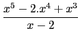

suivant: Coefficients d'une fraction rationnelle
monter: Fraction rationnelle, ses racines
précédent: Fraction rationnelle, ses racines
Table des matières
Index
Racines et pôles exacts d'une fraction rationnelle : froot
froot a comme argument une fraction rationnelle F(x).
froot renvoie un vecteur de composantes les racines et les pôles de
F(x) suivis de leur multiplicité.
Xcas renvoie les valeurs exactes de ces racines ou pôles quand cela est
possible et sinon renvoie leur valeurs numériques.
On tape :
froot((x^5-2*x^4+x^3)/(x-2))
On obtient :
[1,2,0,3,2,-1]
donc pour
F(x) =  :
1 est racine double,
0 est racine triple et
2 est un pôle d'ordre 1.
On tape :
froot((x^3-2*x^2+1)/(x-2))
On obtient :
[1,1,(1+sqrt(5))/2,1,(1-sqrt(5))/2,1,2,-1]
Remarque : pour avoir les racines et les pôles complexes il faut avoir
coché Complexe dans la configuration du cas (bouton donnant la
ligne d'état).
On tape :
froot((x^2+1)/(x-2))
On obtient :
[-i,1,i,1,2,-1]
Documentation de giac écrite par Renée De Graeve